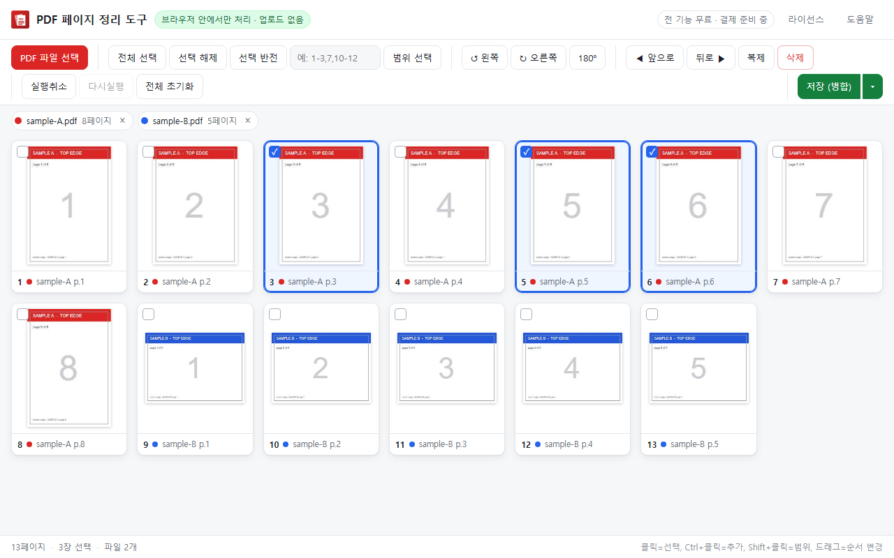
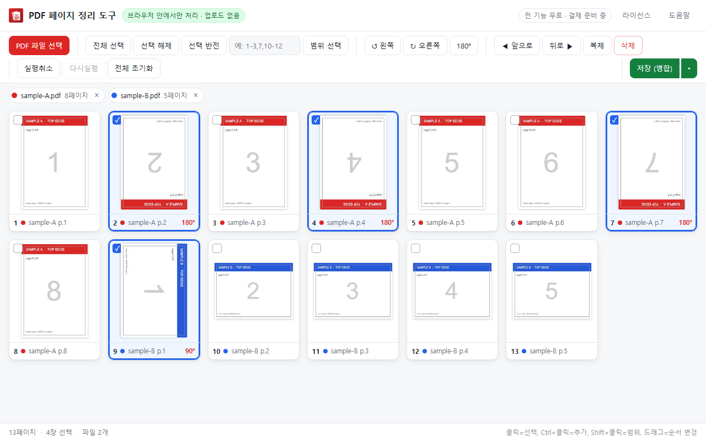
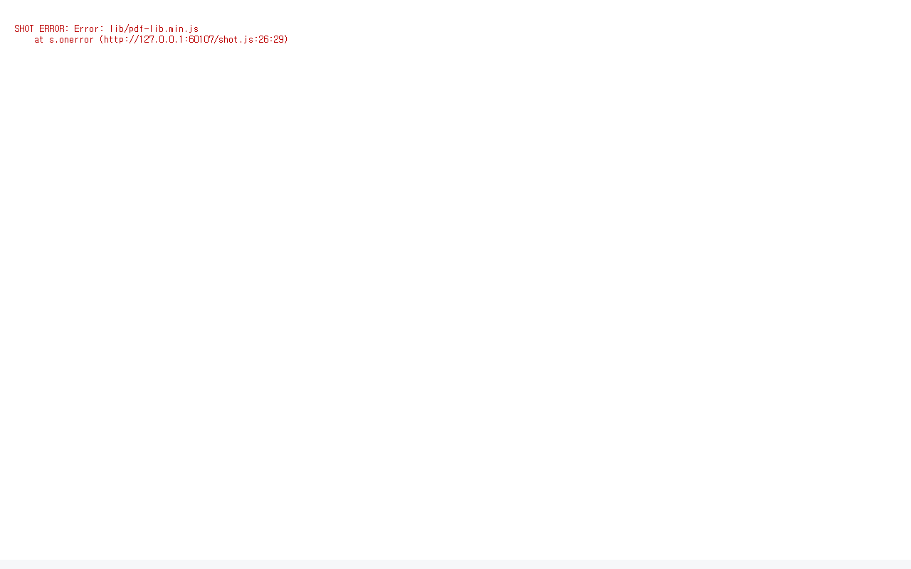
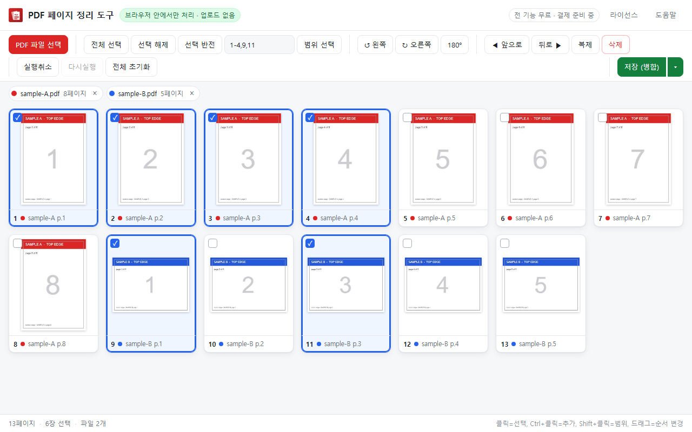
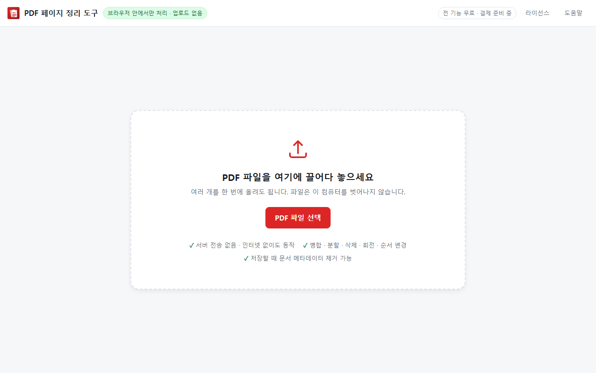

PDF 병합, 분할, 페이지 삭제와 회전. 전부 이 컴퓨터 안에서 끝납니다. 인터넷이 끊겨 있어도 동작합니다.

대부분의 무료 PDF 도구는 파일을 자기네 서버로 올려서 처리합니다. 계약서, 품의서, 인사 서류를 그렇게 올릴 수 있는 회사는 많지 않습니다.
storage 하나뿐페이지를 눈으로 보면서 정리합니다. 몇 쪽이 어디였는지 외울 필요가 없습니다.
여러 PDF를 올린 순서대로 한 파일로 합칩니다.
선택한 페이지만, 원본 파일별로, 한 장씩, N장씩 — 네 가지 방식.
빈 페이지나 잘못 스캔된 장을 골라내고, 필요한 장은 복제합니다.
90° 단위로, 페이지마다 따로. 거꾸로 스캔된 문서를 바로잡습니다.
페이지를 끌어다 놓으면 끝. 여러 장을 골라 한꺼번에 옮길 수도 있습니다.
저장할 때 작성자·제목·생성일을 지웁니다. 외부로 나가는 문서에 유용합니다.
설치하면 바로 이 화면입니다.



1-4,9,11 처럼 적으면 그 페이지들만 한 번에 선택됩니다.
지금은 전 기능을 무료로 쓰실 수 있습니다.
유료 라이선스는 결제 수단이 준비되는 대로 안내드리겠습니다. 그때도 구독이 아니라 1회 결제로 하고, 이미 설치해 쓰시던 분들께 먼저 알려드립니다.
더 궁금한 점은 메일로 물어보세요. 보통 하루 안에 답장합니다.
네. 이 확장 프로그램은 웹사이트 접근 권한(host permissions)을 아예 요청하지 않습니다. 구조적으로 외부에 데이터를 보낼 수 없습니다. 크롬 설치 화면에서 요구 권한이 "저장 공간" 하나뿐인 것으로 직접 확인하실 수 있습니다.
네. 필요한 라이브러리가 전부 확장 프로그램 안에 들어 있어서 오프라인에서 그대로 동작합니다.
열기 암호가 걸린 파일은 지원하지 않습니다. 암호를 해제한 뒤 사용해 주세요. 편집 제한(소유자 암호)만 걸린 파일은 열리지만, 결과가 깨질 수 있어 경고를 표시합니다.
정해진 제한은 없습니다. 다만 전부 메모리에서 처리하므로 수백 MB짜리 문서는 느려질 수 있습니다. 보통의 사무 문서는 문제없습니다.
아닙니다. 유료 라이선스를 도입하더라도 그때 안내를 먼저 드리고, 구독이 아니라 1회 결제 방식으로 할 계획입니다. 이미 설치해서 쓰고 계신 분들이 어느 날 갑자기 기능을 못 쓰게 되는 일은 없습니다.
필요 없습니다. 설치하고 아이콘을 누르면 바로 씁니다. 계정도, 이메일 입력도 없습니다.